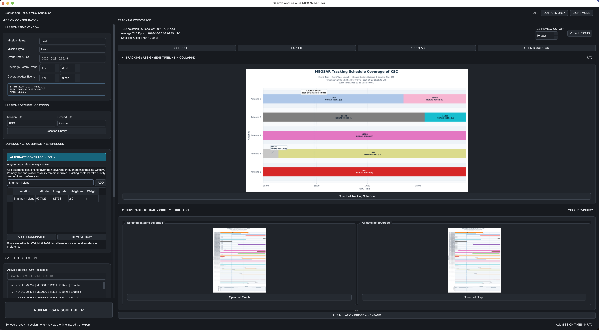

Thomas Mariano / Systems Engineer
I build software.
And make systems work together.
I’m a Systems Engineer at Peraton supporting NASA’s Search and Rescue program at Goddard Space Flight Center. I develop mission planning software, integrate hardware and software, and troubleshoot ground systems.
I am currently pursuing a master’s in Computer Science at Georgia Tech.

Build the application.
I turn mission constraints into scheduling logic, desktop interfaces, and data pipelines. My projects include Python applications and a JavaScript simulation dashboard connected to a Python backend.
Work through the integration.
I work with ground systems and antennas as well as software. That means diagnosing issues across components, testing the connections, and maintaining the systems that support operations.
Selected work
Mission planning software I built.

SOFTWARE / AEROSPACE
MEOSAR Mission Scheduler & Simulator
I built two integrated applications: a scheduler that assigns satellites to available antennas, and a simulator that plays back the plan with satellite positions and coverage. A Python backend connects to a JavaScript globe dashboard.
Python · PyQt6 / WebEngine · Skyfield · JavaScript
Proprietary application developed for NASA’s Search and Rescue program. Not publicly available.
See the project details ↗Local GNSS-to-TLE Generation
I built an internal orbital-data feed used for SAR across all MEOSAR satellites. It converts GNSS navigation records into satellite orbit files, removing recurring external TLE-catalog requests.
MECHANICAL / DESIGNStair Lift for the Elderly
A six-engineer team project recognized with Design for Inclusivity and Perseverance awards at UMD Design Day.
HARDWARE / EMBEDDEDCar Backup Sensor
A three-sensor Arduino system translating distance measurements into real-time audio and visual alerts.
Let’s connect
Interested in working together?
I’m interested in software engineering, solutions engineering, and roles that combine building software with systems integration.